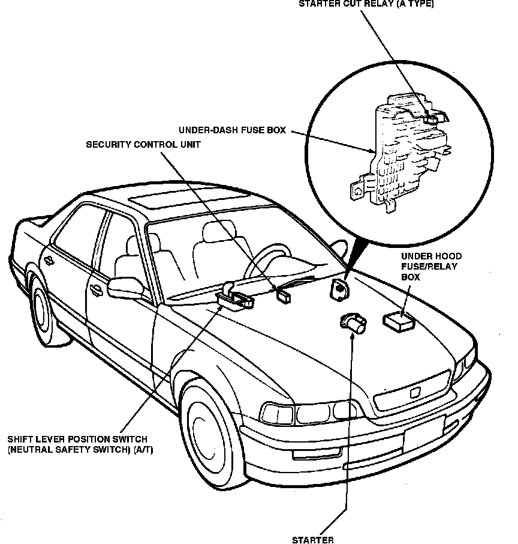

Operation CHARM
: Car repair manuals for everyone.
Home
>>
Acura
>>
1992
>>
Legend Coupe V6-3206cc 3.2L SOHC FI
>>
Repair and Diagnosis
>>
Relays and Modules
>>
Relays and Modules - Accessories and Optional Equipment
>>
Alarm Module
>>
Locations
Alarm Module: Locations
Starting System Components:

Under LH Side Of I/P, Right Of Steering Column